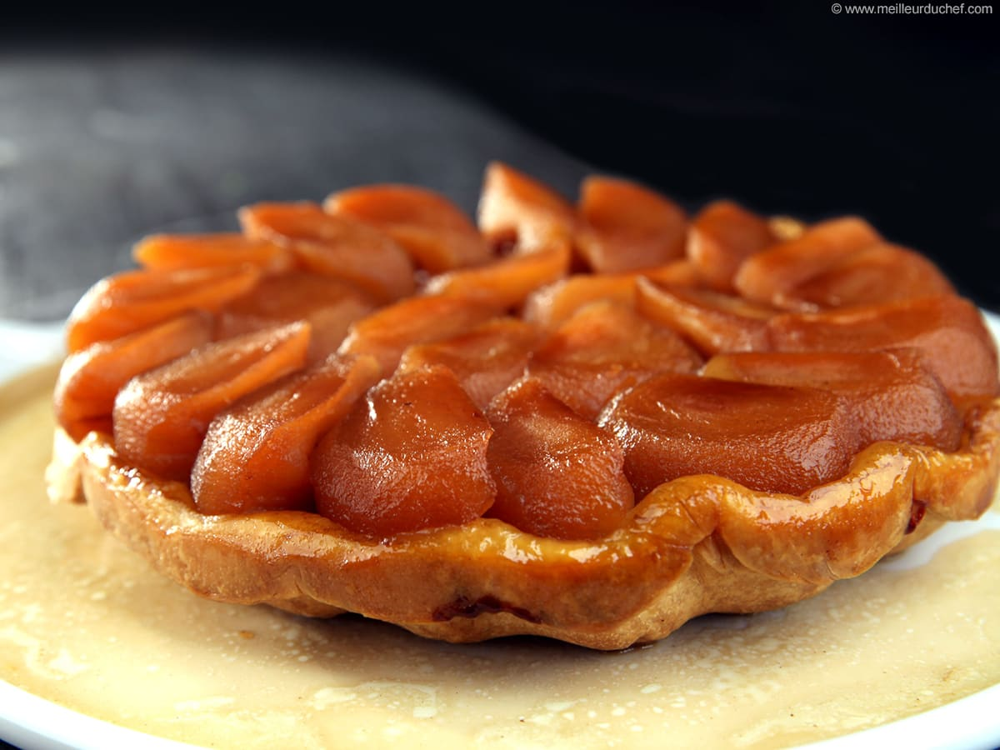

Tarte Tatin

Description
La tarte tatin est un dessert traditionnel français à base de pommes
caramélisées cuites sous une pâte feuilletée.
Ingrédients :
- 1 pâte feuilletée
- 6-8 pommes (type Golden)
- 150 g de beurre
- 150 g de sucre
Etapes :
- Peler et couper les pommes en quartiers.
- Faire caraméliser le sucre dans une poêle avec le beurre.
- Disposer les quartiers de pommes dans le caramel.
- Recouvrir avec la pâte feuilletée et enfourner 30 min à 180°C.
-
Retourner la tarte sur un plat et laisser tiédir avant de déguster.